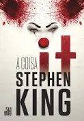

Um grupo de crianças se une para investigar o misterioso
desaparecimento
de vários jovens em sua cidade.
Eles descobrem que o culpado é Pennywise,
um palhaço cruel que se alimenta de seus medos e
cuja violência teve origem há vários séculos.
O mal assume várias formas. Seja com monstros, fantasmas ou demônios,
tanto a literatura quanto o cinema sempre foram bem-sucedidos
em representar a essência do nosso lado mais reprovável.
O exorcista, no entanto, conseguiu superar qualquer outra obra do gênero.
Inspirado no caso real do exorcismo de um
adolescente,
o escritor William Peter Blatty publicou em 1971 a
perturbadora história de Chris MacNeil, uma atriz
que sofre com
inesperadas mudanças no comportamento da filha de 11 anos, Regan.